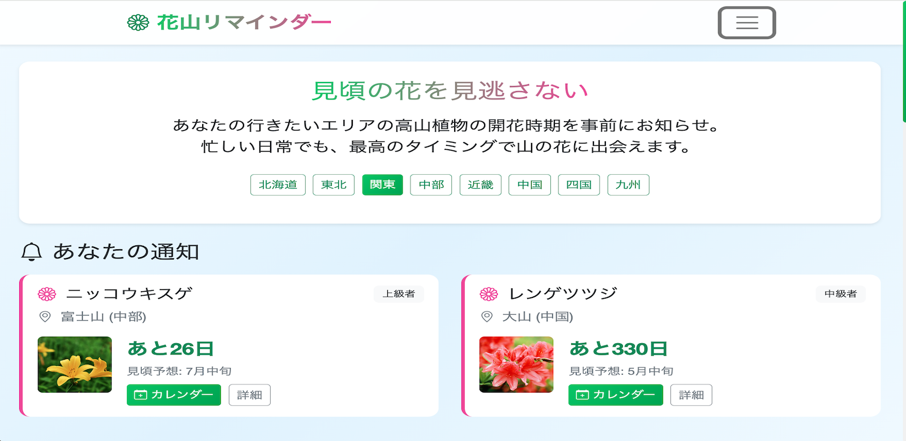

花山リマインダー
開発環境
Ruby / Ruby on Rails / JavaScript / jQuery / Bootstrap / MySQL / GitHub / Render / Visual Studio Code
-
概要
制作時間 150時間 URL https://hanayama-reminder-app-42329.onrender.com/ ID momonst PASS 0407 -
動作テスト
テスト用アカウント
mail usagi@mail PASS usa111
OUTLINEアプリケーションの概要
「花山リマインダー」は、山の花・高山植物の見頃時期を事前に通知するアプリケーションです。
ユーザーは登山愛好家や花の観察を楽しむ方々が、最適なタイミングで山の花や高山植物に出会えるよう事前準備をサポートします。
主な機能は、事前通知機能、ユーザー登録機能、およびリアルタイム写真投稿機能、お気に入り機能です。
トップページにアクセスすると、事前通知一覧とエリア選択画面をメインに、花登山マップや人気投稿などを閲覧することができます。
ユーザー登録をすると、事前通知設定や花山の詳細情報の閲覧、お気に入りの花の情報を登録することができます。
また、リアルタイム投稿をする際は花山を選択し、コメント、写真選択をすることで簡単にその場で投稿することができます。
-
開発に至った経緯
山の花の見頃は短く、場所によって時期が大きく違うため、見逃しやすいという声が多く、
特に、仕事で忙しいユーザーは、登山計画と花のタイミングを合わせづらいという悩みがありました。さらに、既存サービスでは「当日に特化」したアプリが多く、
「事前準備に特化」したアプリがあれば、ニーズに応える価値があると判断したため、今回の作成に至りました。ユーザー参加型で、使えば使うほどデータが蓄積され、翌年の楽しみが増える＆新しい発見ができて、
登山に行くきっかけが多くなるリマインダーを目指します。 -
開発で工夫したこと
花山リマインダーは、「事前準備」に特化しているので、「地域×時期×通知」の組み合わせで、 花の見頃を自分が設定したタイミングで事前通知する機能をメインに、 「手間なく見逃しを防ぐ体験」を目標に、特に以下の点に工夫しました。
♦︎ 事前通知のポップアップ：
リマインドに特化し、ちょっとした気づきを提供できます。
♦︎ エリア選択：
選択したエリアの花と登山スポット詳細へ自然に遷移します。
♦︎ 直感的なインターフェース：
初めての人でも操作がしやすく、わかりやすいデザインにしています。既存アプリにはない機能を実装し、差別化しています。
-
今後実装したいと思っていること

現在のアプリは基本的な機能を提供していますが、ユーザーのニーズに応えるために、以下の追加機能を検討しています。
1つ目が、花山情報のデータ蓄積：ユーザー参加型で年々精度が向上する学習システム
2つ目が、天気情報：年によって開花時期が変わる（気候変動の影響）
そこで、ユーザーにデータ収集を協力してもらい、運営側で花山情報を精査し、追加する仕組みを考えています。 その運用を実現するために管理機能が必要であると考えています。